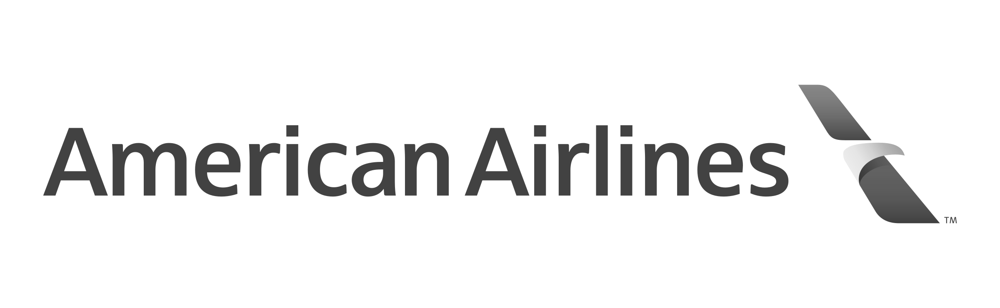
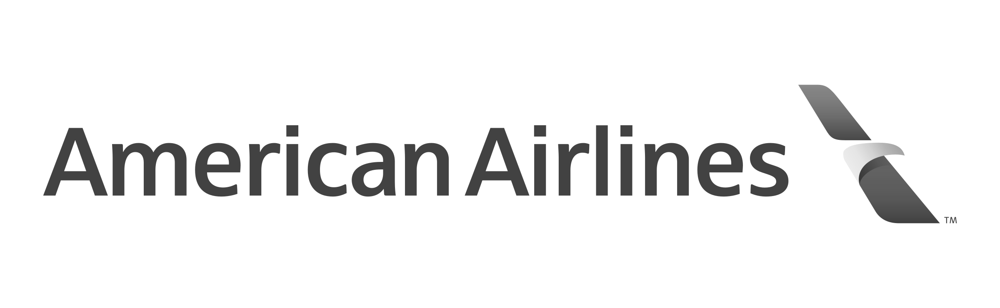

Sobre
A Casa Florescer é um centro de acolhida pioneira no Brasil que acolhe e atende 30 mulhereres transexuais e travestis. É administrada pela instituição Coordenação Regional das obras de Promoção Humana - CROPH em parceria com a Secretaria Municipal de Assistencia e Desenvolvimento Social e Secretaria Municipal de Direitos Humanos

 
